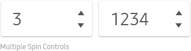
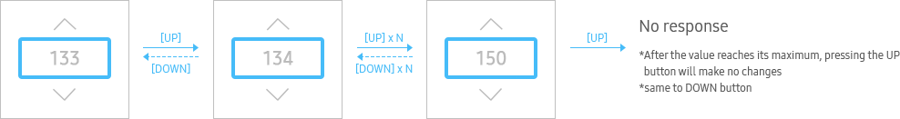
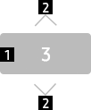
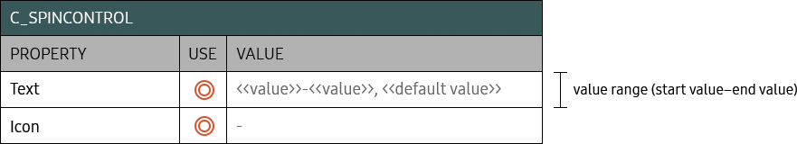

BASIC
C_SPINCONTROL_BASIC
- Definition
-
Use a spin control for items with continuously changing values.
Use a spin control when users can easily predict a set of values. - Usage
-
You can use one to four separate spin controls to adjust values. When you use multiple spin controls, adjust the valid values of the relevant other spin controls based on the user's last setting. When using multiple spin controls, you can display a delimiter between spin controls.
- 
- Interaction
-
- Up/Down
- 
- Up/Down long press
- Specs
-
- Properties
-
- Spin control consists of the following elements:
-
- 1. Text (Mandatory)
-
- - If there is no default value,
- - Numeric values : Display hyphens (-) as many as the number of digits, in the spin box
- - Non-numeric values : Display four consecutive hyphens (----) in the spin box
- - Ensure that a spin control always displays a selected value except when users are entering a value.
- 2. icon (Mandatory)
-
- - Up/Down arrow indicator
- - Make the arrow dimmed if users cannot progress in a direction any longer
- 
- Property Table
- 
- Visual
-

- Motion
-